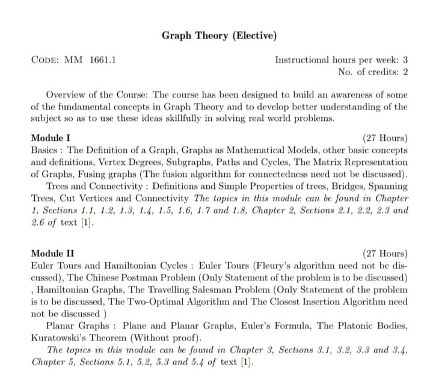

Graph

NetworkX
Graph theory and additive combinatorics
https://www.youtube.com/watch?v=RDO6Py97IDg&list=PLUl4u3cNGP62qauV_CpT1zKaGG_Vj5igX
Machine Learning with graphs
https://www.youtube.com/watch?v=JAB_plj2rbA&list=PLoROMvodv4rOP-ImU-O1rYRg2RFxomvFp
Stanford Graph neural networks
https://www.youtube.com/watch?v=K6anQieeurc&list=PLQjfNCRPCjmZYPsZkjKVm6xoFqzFYWjTI
WilliamFiset
https://www.youtube.com/watch?v=DgXR2OWQnLc&list=PLDV1Zeh2NRsDGO4--qE8yH72HFL1Km93P
Sarada Heiker [Best one ]
https://www.youtube.com/watch?v=eIb1cz06UwI&list=PLw_DssyymmFIeDLxlQtSqbgkNXKGZ9_4x
Divella Srinivasa Rao
https://www.youtube.com/watch?v=3iN2qzg3RMg&list=PL8xmnXn7pVtypj_YW6y9Dv0e-tvwBi_cO
MIT clusters
https://www.youtube.com/watch?v=zLuVrqlYKyg&list=PLiAulSm0XXgtkxss6TXOEffq3RhrsbYbV
Good Channel MathatAndrews
https://www.youtube.com/@MathatAndrews
[Graph theory , Lit Calculus , Metric Space ,Differential Geoemtry,Advanced Linear Algebra , Algebraic Topology , Knot theory]
https://www.andrews.edu/cas/math/
Nptel Soumen Sir
https://www.youtube.com/watch?v=E40r8DWgG40&list=PLEAYkSg4uSQ2fXcfrTGZdPuTmv98bnFY5
prof Rajeev Misara Advanced Graph Theory
https://www.youtube.com/watch?v=6RcRSli0YEI&list=PLEAYkSg4uSQ3NwwQtfSgnKPF5x4iI_XTb
Trees and connectivity
Trees and connectiviyt malayalam Amth dept st aloseous college
https://www.youtube.com/watch?v=mZcG90DvLLI
Part 2
https://www.youtube.com/watch?v=Rw5qguTTMfw
Bridge
https://www.youtube.com/watch?v=8Xv03VytWLM&t=6s
An introduction to graph theory
https://www.youtube.com/watch?v=LFKZLXVO-Dg
prof trefor Bazet
Graph https://www.youtube.com/watch?v=rdXw7Ps9vxc&list=PLHXZ9OQGMqxersk8fUxiUMSIx0DBqsKZS&index=1
Walk trail circuit and path
https://www.youtube.com/watch?v=54ZIFRR9coA
A graph has cycle larger than its minimum
https://www.youtube.com/watch?v=-8QRcpbI6J8
jenny Bridge
https://www.youtube.com/watch?v=CsGP_s_3GWg
Every edge of a tree must be a bridge
https://www.youtube.com/watch?v=CZ1tsR2u81g
Every Forest graph has n-k edges
https://www.youtube.com/watch?v=VOxgZGyK-jY
Every non trivial tree has atleast 2 vertices of degree 1
https://www.youtube.com/watch?v=AAfWDpdMPNA
https://www.youtube.com/@MadhavanSv67
Graph theroy mdodule 3 Trees and Properties [Rekhas]
https://www.youtube.com/watch?v=i_dFyZxy6mU&list=PLjK8Y-XuWBepKxoYp74LpCB8YzvwbzamE
6th sem graph theory
Thrissur
https://www.youtube.com/watch?v=kMXRnWzdBwg&list=PL2Ya74ChmcUslIXGDm7a7QdiMzuESym_l
Varun Soman Graph Theory Ktu
https://www.youtube.com/watch?v=jESXetYo4O8&list=PL4NwIb_iRyKUYLXoJcJCXFn5b_HVRiDEP
Anna thomas – Graph Theory – KTU
https://www.youtube.com/watch?v=jd-3l7PB7_0&list=PLv-1irVkw_hSZ2FcsAxgvli0xcIhrpANm
Ajeesh Ramanujan – 117 Videos
https://www.youtube.com/watch?v=or_hQ7vy2sE&list=PLfC_fEdpdRYj9YKm2HpZuV9dZNcIMjQOE
Gate Smasher
Hand Shaking theorem
https://www.youtube.com/watch?v=Led6YwVxko0
Hamiltonian cycles
https://www.youtube.com/watch?v=2UczS2hQLsI
https://www.youtube.com/watch?v=pTUVll8lcEQ
Ores theorem
https://www.youtube.com/watch?v=IuemcUSObCY&pp=ygUMb3JlcyB0aGVvcmVt
https://www.youtube.com/watch?v=qxD1YF-pe_A
Ajeesh Ramanujan
https://www.youtube.com/watch?v=hAa1CgUb-Yw
Diracs theorem
https://www.youtube.com/watch?v=rJHFXglmYqU
Graphs by Jenny
https://www.youtube.com/watch?v=5hPfm_uqXmw&list=PLtXpHpSB_nR5zHgvUZ3iwgkjl7MKtVjuZ
Koneisberg graph
https://www.youtube.com/watch?v=C7YrMRdLkqo
An Edge is a bridge if it lies on no cycle
https://www.youtube.com/watch?v=lST8mLny9pk
An edge is a cutedge of G iff e has no cycle of G | Graph theorey | cut edge | tamil explanation